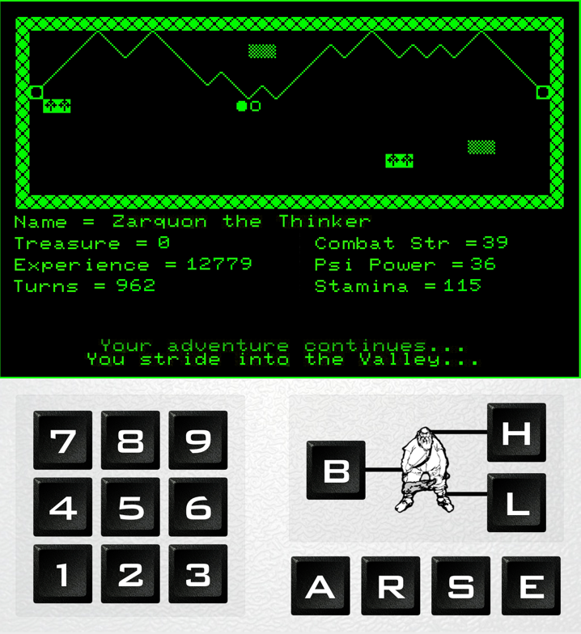

The Valley
A macOS port of a 1982 real-time RPG
Latest Release: 1.1.3
Download And Install The Valley
Please verify the integrity of the download with the SHA-256 checksum.
| File | The_Valley_1_0_7.dmg |
|---|---|
| File Size | 17MB |
| SHA 256 | 9fec6e9a3964afd03430625372491b67c89763d00d846b5f17019acb68d58124 |
How to Play
The object of the game is to save the Valley from the forces of evil: find the legendary Helm of Evanna and this will be achieved. The Helm is hidden in one of Vounim’s Lairs, each on an island within a forest. To have a chance of finding the Helm, you will need to reach the experience level of a Warlord, which you do by travelling through the Valley, its swamps and forests, and the Dark Tower of Zaexon battling monsters.
Hit Cmd-N to start a new game: enter your character’s name and pick a profession: Wizard, Thinker, Barbarian, Warrior or Cleric — click on the named button to select that character. Each has strengths and weaknesses: some will be more successful at performing magic; others are better fighters.
You move using the number keys 1-9; each takes you in the direction shown on the number pad in the game UI. For example, 9 takes you North-East, 1 South-West, 6 East, and so on.

Combat is performed using the H, B and L keys to attempt to strike, respectively, the head, body or legs of your opponent. You can also press S to cast a magic spell: hit keys 1-3 to choose the spell (Sleep, Psi Lance and Crispit). Sleep is available to you from the start; the others as you gain experience. Some monsters are ethereal and can only be fought with magic.
In some combat encounters you will have the initiative: hit A or R to attack or retreat. Attacking gives you the first chance to lay a blow on the monster. Retreating gets you out of the fight but at a cost to your stamina as your opponent lashes out at your fleeing body.
The Valley is a real-time game: you only have a few seconds to use your initiative, cast a spell or attempt to strike an opponent. The readout will tell you when you can act.
The goal of the game is the recovery of the Helm, but you must also seek out the Amulet of Alarian. This is hidden in one of the Temples of Y’Nagioth, which lie on islands in the Valley’s swamps. Six Amulet Stones lie Within the Dark Tower and when found and added to the Amulet give you the power of to survive death — once. Unlike the Lairs and Temples, the Dark Tower has multiple storeys: look for the stairs that will take you up or down. You will also find treasure as you explore; this boosts your experience too.
You can save your game by entering one of the Safe Castles at either end of the Valley itself. Between them is a path on which no monster dares tread — you will be safe from threat there. But those who stay safe will never gain the experience they need to succeed…
For more information, please The Valley GitHub repo Read Me.
Release Notes
- 1.0.7
- Fix window display issue in full screen.
- 1.0.6
- Fix splash graphic colouring glitch.
- 1.0.5
- Revamp new-character sheet graphics and UI.
- Add preference to start game in full screen.
- Improved full screen handling.
- Improved handling of loaded player's arrival in the current scenario.
- 1.0.4
- Fix an issue with key-presses being ignored after reincarnation.
- Add version number to About… sheet.
- 1.0.3
- Fix an issue with game failing to respond to key-presses in full-screen mode.
- Minor changes and fixes.
- 1.0.2
- Initial public release.
Source Code
You can view The Valley’s source code at GitHub.


Site and software copyright © 2014-19, Tony Smith